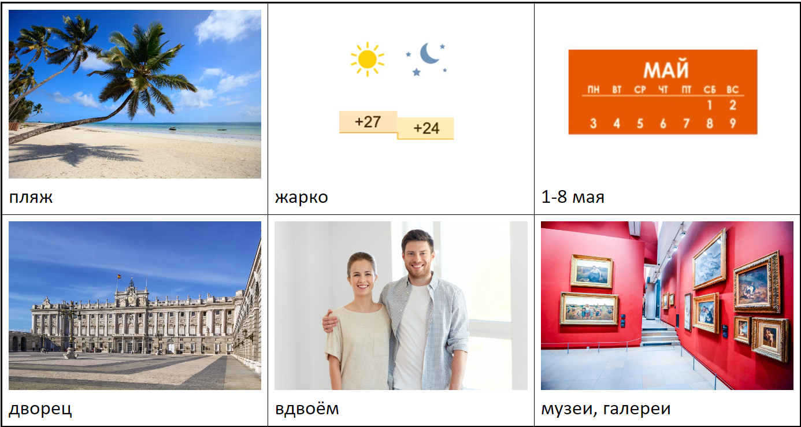
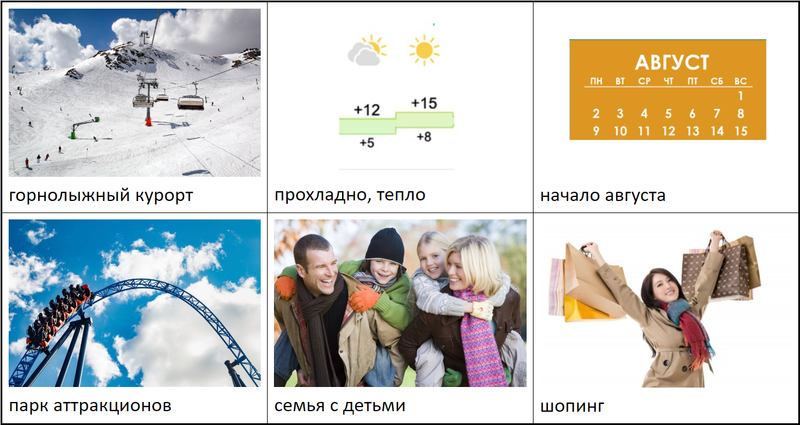
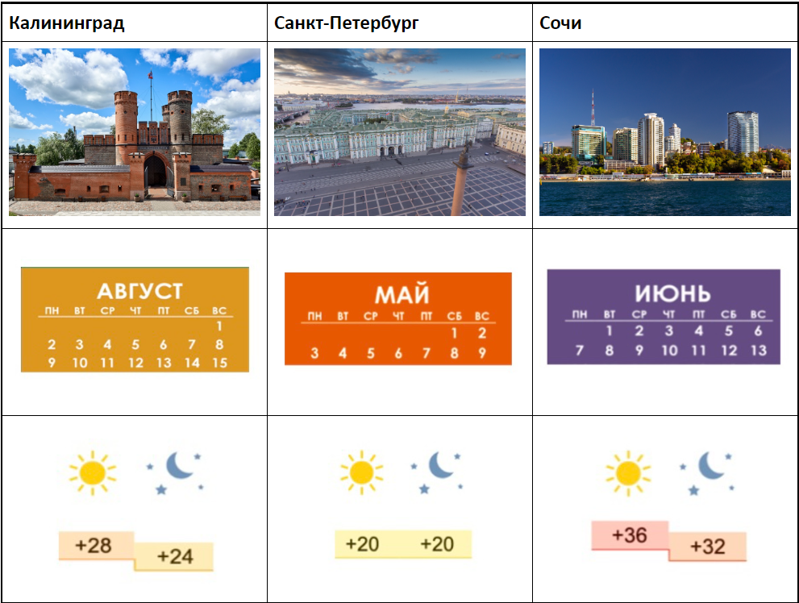
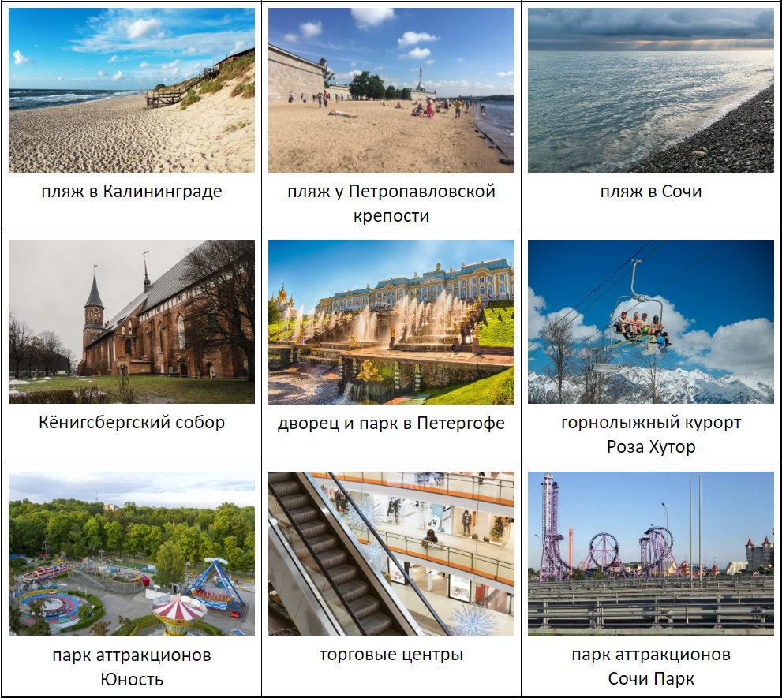

Конструкции урока:
| ID | Construction | Illustration |
|---|---|---|
| 2001 | с точки зрения NP-Gen | С точки зрения экологии, это катастрофа. |
| 899 | впрочем, Cl | Фильм получил высокие оценки. Впрочем, он получился затянутым. |
| 2278 | Cl, не так ли? | Уютная квартира, не так ли? |
| 1137 | на PronPoss-Acc взгляд, Cl | На мой взгляд, у него сложный характер. |
| 2005 | насколько PronPers-1 понимать, Cl | Ты ещё не готов, насколько я понимаю. |
| 188 | на PronPoss-Loc месте/на месте NP-Gen Cl бы | На его месте я бы поступила в другой университет. |
NP = noun phrase (существительное)
Gen = Genitive case (генитив)
Cl = clause, sentence (предложение)
Acc = Accusative case (аккузатив)
PronPoss = possessive pronoun (притяжательное местоимение)
PronPers = personal pronoun (личное местоимение)
1 = 1st person (1 лицо)
Loc = Locative case (локатив)
Русский конструктикон https://constructicon.github.io/russian/
— Алло, привет! Встретимся у Эрмитажа?
— Давай! Это станция метро «Адмиралтейская», не так ли?
— На мой взгляд, от Адмиралтейской дойти ближе всего, впрочем, можно доехать до станции «Гостиный двор» или «Невский проспект», а дальше пешком или на транспорте. На твоём месте я бы доехала от Невского проспекта на такси. Ты билет уже купила?
— Насколько я понимаю, завтра в Эрмитаже бесплатный день, билет не нужен.
— Точно! Тогда до встречи!

|
с точки зрения NP-Gen, Cl Есть разные параметры, по которым можно охарактеризовать объект. Конструкция указывает на один из них. There exist various parameters that can be used to characterize an object. This construction points to one of these parameters. Det eksisterer flere parametere for å beskrive et objekt. Denne konstruksjonen peker mot en av disse parameterne. |
Модель
С точки зрения ________ , ________ лучше/хуже ________
Образец
С точки зрения комфорта, яхта лучше поезда.
| С точки зрения + Gen |
цена комфорт скорость безопасность экология надёжность доступность маневренность |
автобус автомобиль катер самолёт поезд круизный лайнер вертолёт яхта |
лучше/хуже + Gen |
автобус автомобиль катер самолёт поезд круизный лайнер вертолёт яхта |

|
впрочем, Cl Говорящий предложил один вариант ответа, потом немного подумал и предложил другой вариант ответа, который противоречит первому. The speaker offered an answer, then thought for a while and offered a different answer that contradicts the first one. Taleren svarer, tenker seg om en liten stund og kommer med et nytt svar som helt eller delvis motsier det første svaret. |
|
1. — Как мне доехать до стадиона?
— Вам нужен трамвай номер 25. |
а. Впрочем, налево и прямо тоже можно. |
|
2. — Сколько стоит проезд на метро?
— Одна поездка стоит 56 рублей. |
б. Впрочем, вам быстрее дойти пешком через парк. |
|
3. — Как дойти до Большого театра?
— Вам сейчас нужно повернуть направо и на перекрестке снова направо. |
в. Впрочем, на троллейбусе можно доехать всего за двадцать минут. |
|
4. — Ура, прилетели! Поедем домой на автобусе?
— Да, можно. |
г. Впрочем, сейчас пробки. Нам будет быстрее доехать в аэропорт на аэроэкспрессе. |
|
5. — Нам надо быть в аэропорту через час. Я вызову такси?
— Да, вызывай! |
д. Впрочем, неважно! У вас же есть проездной! |
|
6. — Вы далеко живёте от работы?
— Далеко! Пешком идти больше часа. |
е. Впрочем, у нас много багажа. Поехали лучше на такси! |
Откройте схему московского метро по ссылке 1 или 2.

*5 — Кольцевая ветка (название дано не по цвету).
Модель
|
Турист/туристка: — Скажите, пожалуйста, как мне доехать от (Gen)__________ до (Gen) __________? Москвич/москвичка: — Вам нужно доехать до (Gen)____________, а потом пересесть на (Acc) ____________ ветку. Впрочем, вы можете доехать до (Gen)____________, а потом пересесть на (Acc) ____________ ветку (а потом доехать до (Gen)____________и пересесть на (Acc) ____________ ветку) |
Образец
| Откуда | Куда |
| Минская | Киевская |
— Скажите, пожалуйста, как мне доехать от Минской до Киевской?
— Вам нужно доехать до Делового центра, а потом пересесть на голубую ветку. Впрочем, вы можете доехать до Парка победы, а потом пересесть на синюю ветку.
| Откуда | Куда | |
| 1 | Китай-город (Gen Китай-города) | Павелéцкая |
| 2 | Тексти́льщики (Gen Текстильщиков) | Чкáловская |
| 3 | Тру́бная | Площадь революции (Gen Площади революции) |
| 4 | Новослобóдская | Пу́шкинская |
| 5 | Третьякóвская | Серпуховскáя |
| 6 | Театрáльная | Баррикáдная |
| 7 | Маякóвская | Китай-город (Gen Китай-города) |
| 8 | Кропóткинская | Проспект мира (Gen Проспекта мира) |
Образец
А: — На самолёте мы долетим намного быстрее, не так ли?
Б: — Да, но на мой взгляд, мы больше времени потратим в аэропорту. Поезд намного экологичнее, не так ли?
А: — Да, но он дороже, чем автобус, на мой взгляд. Автобусы ходят очень часто, мы можем выбрать самый удобный рейс, не так ли?
Опорные слова
Самолет
Поезд
Автобус
Личный автомобиль
Образец
Вопрос туриста:
— Как доехать от станции метро Театральная до Охотного ряда?
(Это одна станция. Перейдите с зелёной ветки на красную.)
->
Ваш ответ:
— Насколько я понимаю, это одна станция. Перейдите с зелёной ветки на красную.
1. Где находится Никольская улица? (рядом с Красной площадью)
2. Как доехать до Третьяковской галереи? (трамвай номер 3)
3. На чём можно уехать в Сергиев Посад? (электричка)
4. На какой ветке метро находится парк Воробьёвы горы? (красная)
5. Я могу доехать до аэропорта Домодедово на аэроэкспрессе? (да)
Образец
Я поеду на такси (автобус)
->

1. Паша пойдёт пешком. (поехать на метро)
2. Таня поедет на трамвае. (велосипед)
3. Мы полетим на самолёте. (поехать на поезде)
4. Они поедут на трамвае. (машине)
5. Валя поедет на такси. (пойти пешком)
Образец
| Друг | Проблема | Совет |
| Алёна | У меня постоянно болит живот. | не есть фастфуд каждый день |
->

| Друг | Проблема | Совет |
| Сергей | Я получаю плохие оценки за сессию. | готовиться к экзаменам заранее |
| Кристина | Я всё время сильно напиваюсь на вечеринках. | приходить на вечеринки с безалкогольными напитками |
| Костя | Я не могу найти себе девушку. | зарегистрироваться в Тиндере |
| Яна | Я постоянно забываю о своих дедлайнах. | записывать дедлайны в календарь |
Турист 1.
Вы едете отдыхать. Ваше идеальное путешествие:
|  пляж |
 жарко |
 1-8 мая |
|  дворец |
 вдвоём |
 музеи, галереи |
Турист 2.
Вы едете отдыхать. Ваше идеальное путешествие:
 горнолыжный курорт |
 прохладно, тепло |
 начало августа |
 парк аттракционов |
 семья с детьми |
 шопинг |
Турагент
Продайте турпутёвку в Калининград, Сочи или Санкт-Петербург.
| Калининград | Санкт-Петербург | Сочи |
 |
 |
 |
 |
 |
 |
 |
 |
 |
 пляж в Калининграде |
 пляж у Петропавловской крепости |
 пляж в Сочи |
 Кёнигсбергский собор |
 дворец и парк в Петергофе |
 горнолыжный курорт Роза Хутор |
 парк аттракционов Юность |
 торговые центры |
 парк аттракционов Сочи Парк |
Ситуация 1.
Вы в городе Тромсё в Северной Норвегии
Откуда: центральная библиотека города Тромсё
Куда: музей Полярия
Ситуация 2.
Вы в Париже.
Откуда: музей Лувр
Куда: музей Орсе
Ситуация 3.
Вы в Москве.
Откуда: парк Зарядье
Куда: музей Третьяковская галерея